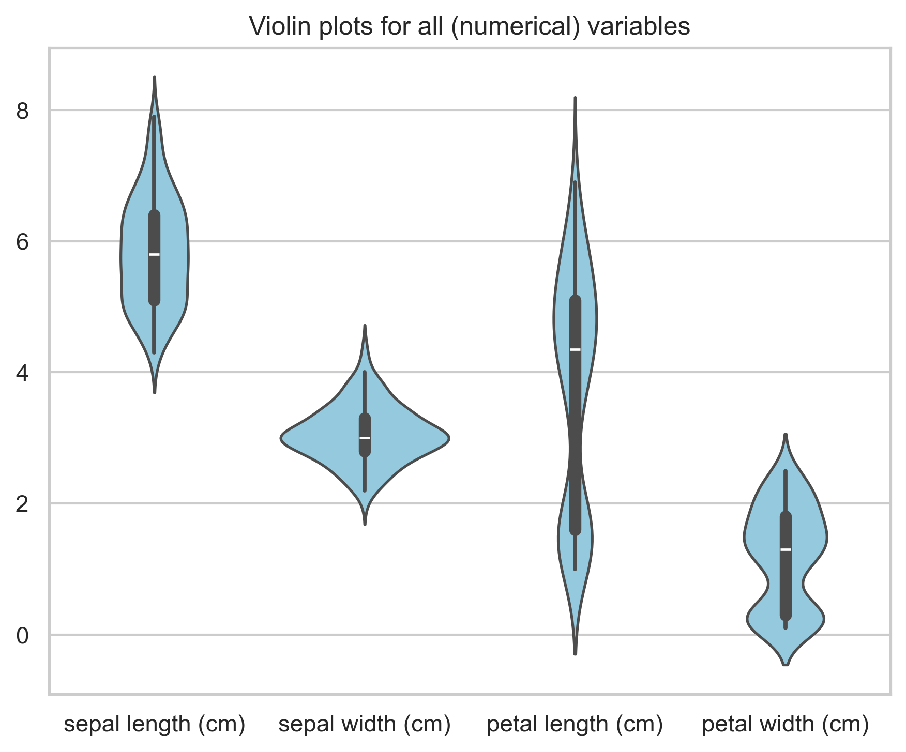
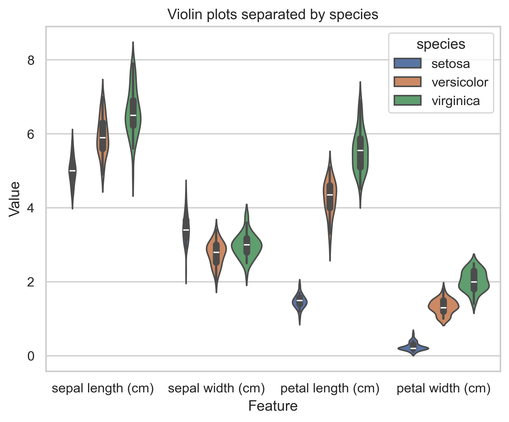
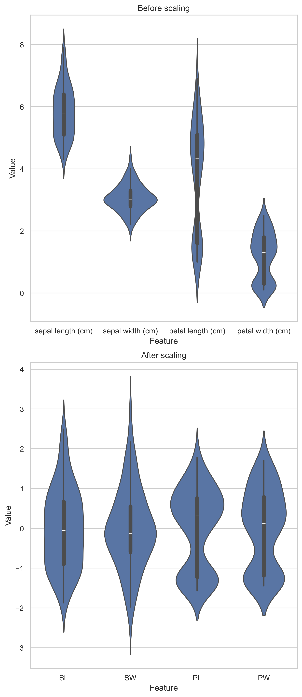

Code
import numpy as np
import matplotlib.pyplot as plt
import pandas as pd
import seaborn as sns
from sklearn import datasets
from sklearn.preprocessing import StandardScalerThomas Manke
April 22, 2026
In this notebook you will learn how to:
We stay entirely in the realm of descriptive analysis and visualization.
We do not build predictive models yet.
The famous Iris data set contains measurements of iris flowers from three species.
X[:3]:
[[5.1 3.5 1.4 0.2]
[4.9 3. 1.4 0.2]
[4.7 3.2 1.3 0.2]]
y[:3]:
[0 0 0]It’s always good to look at data origin and motivations for collection.
.. _iris_dataset:
Iris plants dataset
--------------------
**Data Set Characteristics:**
:Number of Instances: 150 (50 in each of three classes)
:Number of Attributes: 4 numeric, predictive attributes and the class
:Attribute Information:
- sepal length in cm
- sepal width in cm
- petal length in cm
- petal width in cm
- class:
- Iris-Setosa
- Iris-Versicolour
- Iris-Virginica
:Summary Statistics:
============== ==== ==== ======= ===== ====================
Min Max Mean SD Class Correlation
============== ==== ==== ======= ===== ====================
sepal length: 4.3 7.9 5.84 0.83 0.7826
sepal width: 2.0 4.4 3.05 0.43 -0.4194
petal length: 1.0 6.9 3.76 1.76 0.9490 (high!)
petal width: 0.1 2.5 1.20 0.76 0.9565 (high!)
============== ==== ==== ======= ===== ====================
:Missing Attribute Values: None
:Class Distribution: 33.3% for each of 3 classes.
:Creator: R.A. Fisher
:Donor: Michael Marshall (MARSHALL%PLU@io.arc.nasa.gov)
:Date: July, 1988
The famous Iris database, first used by Sir R.A. Fisher. The dataset is taken
from Fisher's paper. Note that it's the same as in R, but not as in the UCI
Machine Learning Repository, which has two wrong data points.
This is perhaps the best known database to be found in the
pattern recognition literature. Fisher's paper is a classic in the field and
is referenced frequently to this day. (See Duda & Hart, for example.) The
data set contains 3 classes of 50 instances each, where each class refers to a
type of iris plant. One class is linearly separable from the other 2; the
latter are NOT linearly separable from each other.
.. dropdown:: References
- Fisher, R.A. "The use of multiple measurements in taxonomic problems"
Annual Eugenics, 7, Part II, 179-188 (1936); also in "Contributions to
Mathematical Statistics" (John Wiley, NY, 1950).
- Duda, R.O., & Hart, P.E. (1973) Pattern Classification and Scene Analysis.
(Q327.D83) John Wiley & Sons. ISBN 0-471-22361-1. See page 218.
- Dasarathy, B.V. (1980) "Nosing Around the Neighborhood: A New System
Structure and Classification Rule for Recognition in Partially Exposed
Environments". IEEE Transactions on Pattern Analysis and Machine
Intelligence, Vol. PAMI-2, No. 1, 67-71.
- Gates, G.W. (1972) "The Reduced Nearest Neighbor Rule". IEEE Transactions
on Information Theory, May 1972, 431-433.
- See also: 1988 MLC Proceedings, 54-64. Cheeseman et al"s AUTOCLASS II
conceptual clustering system finds 3 classes in the data.
- Many, many more ...
See also: Wikipedia
Use Python to answer the following questions:
X and y?X and y?y contain? What could these values represent?# 1. Object and data types
print(type(X), X.dtype) # numpy.ndarray, float (measurements)
print(type(y), y.dtype) # numpy.ndarray, int (labels)
# 2. Shapes
print(X.shape) # (150, 4)
print(y.shape) # (150,)
# 3. Number of observations and variables
n_obs, n_var = X.shape
print(n_obs, n_var)
# 4. Unique values in y --> species labels as integers
yu = np.unique(y)
print(f"Unique y: {yu} length: {len(yu)}")y represent? Is it suitable for descriptive analysis?
Need better data representations!
species_names: ['setosa' 'versicolor' 'virginica']y_species variable.
What is its data type? What are its unique values? How does it differ from y?
X and y - is this necessary?
For many data descriptions and visualizations it is convenient to combine all variables in one pandas DataFrame.
sepal length (cm) sepal width (cm) petal length (cm) petal width (cm) \
0 5.1 3.5 1.4 0.2
1 4.9 3.0 1.4 0.2
2 4.7 3.2 1.3 0.2
species
0 setosa
1 setosa
2 setosa Mean feature values by species
sepal length (cm) sepal width (cm) petal length (cm) \
species
setosa 5.006 3.428 1.462
versicolor 5.936 2.770 4.260
virginica 6.588 2.974 5.552
petal width (cm)
species
setosa 0.246
versicolor 1.326
virginica 2.026 /var/folders/jh/jwym2_j128v8nn1dwc0sc10m0000gn/T/ipykernel_48314/1824187983.py:2: FutureWarning:
The default of observed=False is deprecated and will be changed to True in a future version of pandas. Pass observed=False to retain current behavior or observed=True to adopt the future default and silence this warning.
One-hot encoding is another common representation for categorical variables.
Violin plots visually summarize the distribution of variables. They are similar in spirit to boxplots.

species is dropped automatically by sns.violinplot()df in long formatIn long format:
(observation, variable) combination,# keep species, reshape only feature columns
feature_cols = feature_names
df_long = df.melt(
id_vars="species", # columns to keep as is
value_vars=feature_cols, # columns to reshape
var_name="Feature",
value_name="Value"
)
print(f"Wide format. df.shape = {df.shape}")
print(df.head(3))
print(f"Long format. df_long.shape = {df_long.shape}")
print(df_long.head(3))Wide format. df.shape = (150, 5)
sepal length (cm) sepal width (cm) petal length (cm) petal width (cm) \
0 5.1 3.5 1.4 0.2
1 4.9 3.0 1.4 0.2
2 4.7 3.2 1.3 0.2
species
0 setosa
1 setosa
2 setosa
Long format. df_long.shape = (600, 3)
species Feature Value
0 setosa sepal length (cm) 5.1
1 setosa sepal length (cm) 4.9
2 setosa sepal length (cm) 4.7
Pairwise scatterplots can be useful for exploratory analysis of small data sets (few variables)
… is often used if data is skewed and has long-tailed distributions
\[ x \to \log(x + 1) \]
… brings all variables to a common scale. Here we use standardization:
\[ z = \frac{x - \mu}{\sigma} \]
With Python/sklearn:
Z (see above for unscaled data X).# the orginal names would be misleading after scaling, so we use short names
short_names = ["SL", "SW", "PL", "PW"]
df_scaled = pd.DataFrame(Z, columns=short_names)
df_scaled["species"] = pd.Categorical.from_codes(y, species_names)
df_scaled_long = df_scaled.melt(
id_vars="species",
value_vars=short_names,
var_name="Feature",
value_name="Value"
)fig, axes = plt.subplots(2, 1, figsize=(6, 14), constrained_layout=True)
sns.violinplot(data=df_long, x="Feature", y="Value", ax=axes[0])
axes[0].set_title("Before scaling")
#
sns.violinplot(data=df_scaled_long, x="Feature", y="Value", ax=axes[1])
axes[1].set_title("After scaling")
plt.show()
rows = ["mean","std"]
print("Before scaling")
print(df.describe().loc[rows])
#print(df.drop(columns="species").agg(rows))
print("After after scaling")
print(df_scaled.describe().loc[rows])
Before scaling
sepal length (cm) sepal width (cm) petal length (cm) petal width (cm)
mean 5.843333 3.057333 3.758000 1.199333
std 0.828066 0.435866 1.765298 0.762238
After after scaling
SL SW PL PW
mean -1.468455e-15 -1.823726e-15 -1.610564e-15 -9.473903e-16
std 1.003350e+00 1.003350e+00 1.003350e+00 1.003350e+00Correlation matrix before scaling
sepal length (cm) sepal width (cm) petal length (cm) \
sepal length (cm) 1.000000 -0.117570 0.871754
sepal width (cm) -0.117570 1.000000 -0.428440
petal length (cm) 0.871754 -0.428440 1.000000
petal width (cm) 0.817941 -0.366126 0.962865
petal width (cm)
sepal length (cm) 0.817941
sepal width (cm) -0.366126
petal length (cm) 0.962865
petal width (cm) 1.000000
Correlation matrix after scaling
SL SW PL PW
SL 1.000000 -0.117570 0.871754 0.817941
SW -0.117570 1.000000 -0.428440 -0.366126
PL 0.871754 -0.428440 1.000000 0.962865
PW 0.817941 -0.366126 0.962865 1.000000Before most analysis, it is good practice to check for missing values.
The Iris dataset has no missing data.
Missing values per column
sepal length (cm) 0
sepal width (cm) 0
petal length (cm) 0
petal width (cm) 0
species 0
dtype: int64penguins.shape: (344, 7)
species island bill_length_mm bill_depth_mm flipper_length_mm \
0 Adelie Torgersen 39.1 18.7 181.0
1 Adelie Torgersen 39.5 17.4 186.0
2 Adelie Torgersen 40.3 18.0 195.0
3 Adelie Torgersen NaN NaN NaN
4 Adelie Torgersen 36.7 19.3 193.0
body_mass_g sex
0 3750.0 Male
1 3800.0 Female
2 3250.0 Female
3 NaN NaN
4 3450.0 Female Some common strategies are:
Here we replace missing numeric values by the column mean. This is simple, but not always ideal.
penguins_imputed = penguins.copy()
# select numeric columns
num_cols = penguins_imputed.select_dtypes(include=np.number).columns
for col in num_cols:
col_mean = penguins_imputed[col].mean()
penguins_imputed[col] = penguins_imputed[col].fillna(col_mean)
print("Imputed shape:", penguins_imputed.shape)
print(penguins_imputed[num_cols].isna().sum())Imputed shape: (344, 7)
bill_length_mm 0
bill_depth_mm 0
flipper_length_mm 0
body_mass_g 0
dtype: int64---
title: "01 Machine Learning"
jupyter: pytorch
description: "Template for Descriptive Data Analysis (Iris Dataset)"
image: "images/sepal_petal.jpeg"
eval: true
echo: true
draft: false
params:
show_code: true
---
## Learning goals
In this notebook you will learn how to:
- inspect types and shapes of a tabular data set
- convert data between **wide** and **long** format
- understand different data representations for (categorical) variables
- compute simple numerical summaries
- visualize distributions and pairwise relationships
- understand and use **scale transformations**
- recognize and handle **missing values**
We stay entirely in the realm of **descriptive analysis and visualization**.
We do **not** build predictive models yet.
## Import packages
```{python}
#| label: import
import numpy as np
import matplotlib.pyplot as plt
import pandas as pd
import seaborn as sns
from sklearn import datasets
from sklearn.preprocessing import StandardScaler
```
```{python}
#| label: plotting-style
sns.set_theme(style="whitegrid")
plt.rcParams["figure.figsize"] = (6, 5)
```
## Get Iris data
The famous Iris data set contains measurements of iris flowers from three species.
```{python}
#| label: iris-get-data
#| eval: true
#| echo: true
iris = datasets.load_iris()
X = iris.data
y = iris.target
# print first elements
print('X[:3]:\n', X[:3])
print('y[:3]:\n', y[:3])
```
::: {.callout-note collapse="true"}
### Human Data Description
It's always good to look at data origin and motivations for collection.
```{python}
#| label: iris-human-description
print(iris.DESCR)
```
See also: [Wikipedia](https://en.wikipedia.org/wiki/Iris_flower_data_set){target="_blank" rel="noopener"}
:::
::: {.callout-important}
### Practical Task (5 min)
Use Python to answer the following questions:
1. What are the **object types** and **data types** of `X` and `y`?
2. What are the **shapes** of `X` and `y`?
3. How many **observations** and **variables** does the dataset have?
4. How many **unique values** does `y` contain? What could these values **represent**?
:::
::: {.content-visible when-meta=params.show_code}
```{python}
#| label: iris-inspect
#| eval: false
#| code-fold: true
# 1. Object and data types
print(type(X), X.dtype) # numpy.ndarray, float (measurements)
print(type(y), y.dtype) # numpy.ndarray, int (labels)
# 2. Shapes
print(X.shape) # (150, 4)
print(y.shape) # (150,)
# 3. Number of observations and variables
n_obs, n_var = X.shape
print(n_obs, n_var)
# 4. Unique values in y --> species labels as integers
yu = np.unique(y)
print(f"Unique y: {yu} length: {len(yu)}")
```
:::
## Data Representations
::: {.callout-note}
### Discussion: What does `y` represent? Is it suitable for descriptive analysis?
```{python}
#| label: y_summaries_meaningful
print(f'y.mean() = {y.mean()}, y.std() = {y.std()}')
```
:::
Need better **data representations**!
### Integers $\to$ Categories:
```{python}
#| label: integer-to-category
species_names = iris.target_names
print('species_names:', species_names)
# translate numeric labels to categorical labels
y_species = pd.Categorical.from_codes(y, species_names)
```
::: {.callout-important}
#### Task: Inspect the `y_species` variable.
What is its data type? What are its unique values? How does it differ from `y`?
:::
::: {.content-visible when-meta=params.show_code}
```{python}
#| label: inspect-y-species
#| eval: false
#| code-fold: true
print('y_species:', y_species)
print('y_species.dtype:', y_species.dtype)
```
:::
### Categories $\to$ Integers:
```{python}
#| label: category-to-integer
# translate back to integer codes
y_code = y_species.codes
print('y_code.dtype:', y_code.dtype)
print('y_code == y:', np.array_equal(y_code, y))
```
### Working with Data Frames
::: {.callout-important}
#### Question: Why is the data split into `X` and `y` - is this necessary?
:::
For many data descriptions and visualizations it is convenient to combine all variables in one `pandas` DataFrame.
```{python}
#| label: iris-dataframe
feature_names = iris.feature_names # = variable names
df = pd.DataFrame(X, columns=feature_names)
df["species"] = y_species
print(df.head(3))
```
::: {.callout-important}
### Task: Compare 2 statistical summaries and explain differences.
```{python}
#| label: numerical-summaries
#| eval: false
# awkward summaries of numbers and categories
print('Overall summary:')
print(df.describe(include="all"))
# useful summaries for each species (group level)
print('Summary by species:')
print(df.groupby("species").describe())
```
:::
::: {.callout-important}
### Task: Which species has the largest petal length on average?
:::
::: {.content-visible when-meta=params.show_code}
```{python}
#| label: grouped-summaries
#| eval: true
#| code-fold: true
print("Mean feature values by species")
print(df.groupby("species").mean()) # virginica
```
:::
### More representations
One-hot encoding is another common representation for categorical variables.
::: {.callout-important}
#### Task: Run the following and interpret the output.
```{python}
#| label: one-hot-encoding
#| eval: false
#| echo: true
df1_onehot = pd.get_dummies(df["species"])
print('one_hot:\n',df1_onehot.head())
df2_onehot = pd.get_dummies(df["species"], drop_first=True)
print('one_hot (drop_first=True):\n', df2_onehot.tail())
```
```{python}
#| label: reverse-one-hot
#| eval: false
#| echo: false
# simple trick via idxmax() (works only for simplest one-hot encoding)
df1_species = df1_onehot.idxmax(axis=1)
print(df1_species.head(3))
# sklearn way
from sklearn.preprocessing import OneHotEncoder
enc = OneHotEncoder(sparse_output=False)
Y_oh = enc.fit_transform(y_species.reshape(-1, 1))
y_back = enc.inverse_transform(Y_oh)
print('Y_oh:\n', Y_oh[:3])
print('y_back:\n', y_back[:3])
```
:::
## Distributions
**Violin plots** visually summarize the distribution of variables.
They are similar in spirit to boxplots.
```{python}
#| label: violin-from-wide
#| caption: "Violin plot from wide format"
plt.figure()
sns.violinplot(data=df, color="skyblue")
plt.title("Violin plots for all (numerical) variables")
plt.tight_layout()
plt.show()
```
::: {.callout-note}
#### Notice
- categorical variable `species` is dropped automatically by `sns.violinplot()`
- variable have different scales and ranges
- variables are not normally distributes: skewed and bimodal
- How to split the violins by species? $\to$ need `df` in long format
:::
### Melt: Wide $\to$ Long Format
In long format:
- each row corresponds to one `(observation, variable)` combination,
- one column stores the **variable name**,
- one column stores the measured **value**
- optionally we can keep any number of variables for id_vars
```{python}
#| label: long-format
# keep species, reshape only feature columns
feature_cols = feature_names
df_long = df.melt(
id_vars="species", # columns to keep as is
value_vars=feature_cols, # columns to reshape
var_name="Feature",
value_name="Value"
)
print(f"Wide format. df.shape = {df.shape}")
print(df.head(3))
print(f"Long format. df_long.shape = {df_long.shape}")
print(df_long.head(3))
```
### Long Convenience
```{python}
#| label: violins-by-species
plt.figure()
sns.violinplot(x="Feature", y="Value", hue="species", data=df_long)
plt.title("Violin plots separated by species")
plt.tight_layout()
plt.show()
```
::: {.callout-note}
#### Notices
- Splitting by species accounts for some of the observed variance, skewness, and bimodality.
- remaing variability looks more normal
- variables still have different scales
:::
::: {.callout-important}
#### Question: Which variable separates the species best?
:::
## Correlations
### Visually: Pairplot
Pairwise scatterplots can be useful for exploratory analysis of small data sets (few variables)
```{python}
#| label: pairplot
sns.pairplot(df, hue="species", height=1.6)
plt.show()
```
### Numerically: Correlation Coefficients
::: {.callout-important}
#### Tasks
- Which methods are available to compute correlations?
- help(df.corr) or
- [Pandas corr() documentation](https://pandas.pydata.org/docs/reference/api/pandas.DataFrame.corr.html){target="_blank" rel="noopener"}
- Determine the strongest correlating and anticorrelating pairs
:::
::: {.content-visible when-meta=params.show_code}
```{python}
#| label: correlation-matrix
#| code-fold: true
corr = df.corr(numeric_only=True)
```
:::
### Visualizing Correlation Coefficients (Heatmap)
```{python}
#| label: correlation-heatmap
plt.figure()
sns.heatmap(corr,
vmin=-1, vmax=1,
cmap="coolwarm",
annot=True,
fmt=".2f",
square=True,
cbar_kws={"label": "Correlation Coefficient"}
)
plt.title("Correlation matrix")
plt.tight_layout()
plt.show()
```
```{python}
#| label: iris-heatmap
#| eval: false
#| echo: false
# not shown
# only show heatmaps if you know what you get ;-)
# preprocess/filter, transform, scale
sns.heatmap(df.drop(columns="species"), cmap="Blues", cbar_kws={"label": "Value"})
plt.xlabel("Variables (features)")
plt.ylabel("Samples (observations)")
plt.title("Heatmap of the raw data matrix")
plt.tight_layout()
plt.show()
```
## Data Transformations
### Log-Transformation
... is often used if data is skewed and has long-tailed distributions
$$
x \to \log(x + 1)
$$
### Scaling Transformation
... brings all variables to a common scale. Here we use **standardization**:
$$
z = \frac{x - \mu}{\sigma}
$$
With Python/sklearn:
```{python}
#| label: scaling
scaler = StandardScaler()
Z = scaler.fit_transform(X)
```
::: {.callout-important}
#### Task (10 min)
- Create a (long) data frame for the scaled Iris data `Z` (see above for unscaled data `X`).
- Compare the violin plots before and after scaling. What has changed? What has stayed the same?
- Compare the correlation matrices before and after scaling.
:::
::: {.content-visible when-meta=params.show_code}
```{python}
#| label: scaling-to-long
#| code-fold: true
# the orginal names would be misleading after scaling, so we use short names
short_names = ["SL", "SW", "PL", "PW"]
df_scaled = pd.DataFrame(Z, columns=short_names)
df_scaled["species"] = pd.Categorical.from_codes(y, species_names)
df_scaled_long = df_scaled.melt(
id_vars="species",
value_vars=short_names,
var_name="Feature",
value_name="Value"
)
```
```{python}
#| label: violin-before-after
#| code-fold: true
fig, axes = plt.subplots(2, 1, figsize=(6, 14), constrained_layout=True)
sns.violinplot(data=df_long, x="Feature", y="Value", ax=axes[0])
axes[0].set_title("Before scaling")
#
sns.violinplot(data=df_scaled_long, x="Feature", y="Value", ax=axes[1])
axes[1].set_title("After scaling")
plt.show()
rows = ["mean","std"]
print("Before scaling")
print(df.describe().loc[rows])
#print(df.drop(columns="species").agg(rows))
print("After after scaling")
print(df_scaled.describe().loc[rows])
```
```{python}
#| label: corr-after-scaling
#| code-fold: true
corr = df.corr(numeric_only=True)
print("Correlation matrix before scaling")
print(corr)
corr_scaled = df_scaled.corr(numeric_only=True)
print("Correlation matrix after scaling")
print(corr_scaled)
```
:::
::: {.callout-note}
#### Notice. Scaling (X $\to$ Z)
- changes the **units** and relative spread of variables: mean(Z) $\approx 0$, std(Z) $\approx 1$,
- does **not** change the ranking of observations within one variable,
- does **not** change Pearson correlations.
:::
# Handling missing data
Before most analysis, it is good practice to check for missing values.
The Iris dataset has no missing data.
```{python}
#| label: iris-missing-values
na_counts = df.isna().sum()
print("Missing values per column")
print(na_counts)
```
## Missing Data for Penguins
```{python}
#| label: penguins-load
penguins = sns.load_dataset("penguins")
print('penguins.shape:', penguins.shape)
print(penguins.head())
```
::: {.callout-important}
#### Task: Which variables contain missing values?
```{python}
#| label: penguins-missing-values
#| echo: false
#| eval: false
print(penguins.isna().sum())
```
:::
## Simple strategies for handling missing values
Some common strategies are:
- **remove rows** with missing values,
- **remove columns** with too many missing values,
- **impute** missing values, for example by the mean or median,
- keep missingness in mind as a possible source of bias.
### Option 1: remove incomplete rows
```{python}
#| label: penguins-dropna
penguins_complete = penguins.dropna()
print("Original shape:", penguins.shape)
print("After dropna():", penguins_complete.shape)
```
### Option 2: simple numerical imputation (fillna)
Here we replace missing numeric values by the column mean.
This is simple, but not always ideal.
```{python}
#| label: penguins-impute
penguins_imputed = penguins.copy()
# select numeric columns
num_cols = penguins_imputed.select_dtypes(include=np.number).columns
for col in num_cols:
col_mean = penguins_imputed[col].mean()
penguins_imputed[col] = penguins_imputed[col].fillna(col_mean)
print("Imputed shape:", penguins_imputed.shape)
print(penguins_imputed[num_cols].isna().sum())
```
::: {.callout-important}
#### Discussion: What are the advantages/disadvantages of these two approaches?
:::
## Summary: Descriptive Analysis Workflow
- inspect shape and variable names,
- identify observations and variables
- check and fix/filter missing values
- variable distributions - visualization & numerical summaries
- variable relationships - visualization & correlation coefficients
- consider variable transformations (numerical and categorical)